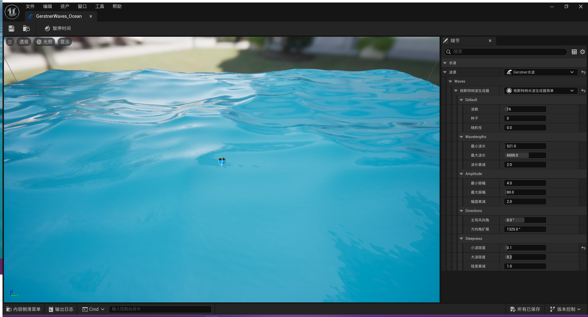
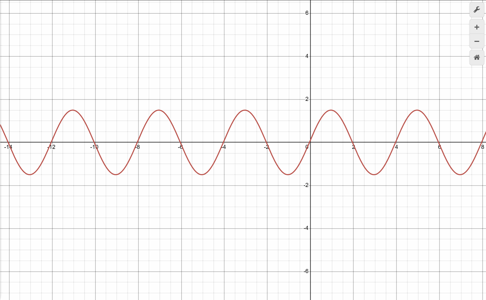
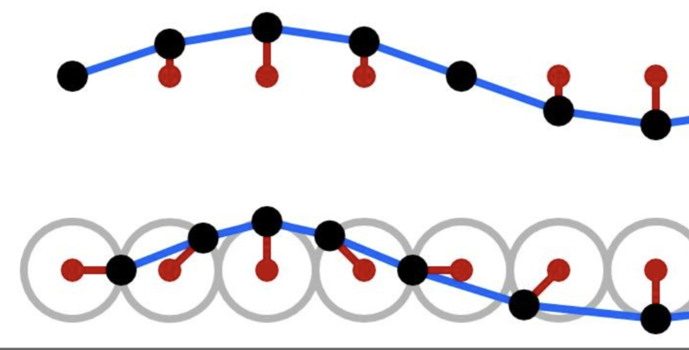
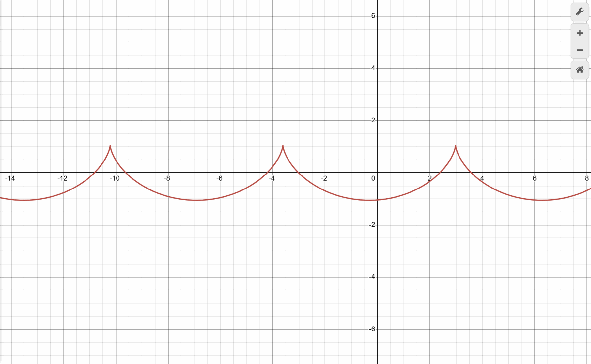
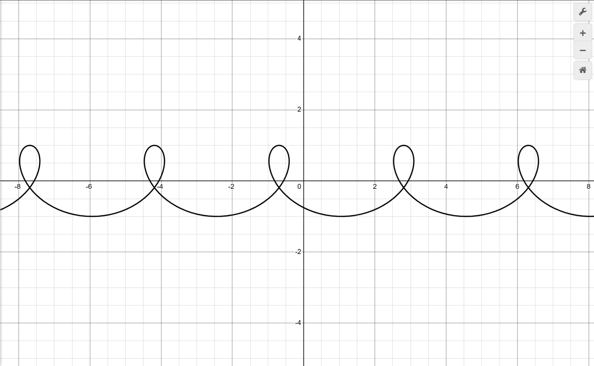

Gerstner波形
前言
好久不见，最近正处于工作比较忙的阶段，每天为了应付工作上的事情就已经筋疲力尽了。为了得到更好的渲染效率，KongEngine目前正处于比较大的重构之中。同时最近我开始为KongEngine增加对Vulkan的支持，一起都还处于最初的混沌之中，所以KongEngine的渲染特性目前没有什么增加，没有什么可写的。我计划等一起都尘埃落定在详细的介绍一下。
今天这篇文章，算是对之前水面渲染的一个小小的延伸，也是填了之前埋得一个小小的坑。
生成波浪
我在《水面效果-1》和《水面效果-2》这两篇文章中，我简单介绍了一种水面渲染效果的方法。这种方法最后的结果能输出出不错的水面效果，但是有一个比较大的缺陷就是，这种方法渲染出来的水面是平的。
尽管在这两篇文章中，我们尝试使用了几种方法来让水面产生波纹扰动，包括dudv map和normal map。但是水面的mesh最终只是一个平面，如果你以相对平行的视角去看的话，水面是没有起伏的。
如何解决这个问题呢？那有个很简单的思路，我们只要让水面不只是一个平面，让他是一个有波纹扰动的mesh就可以了。在《水面效果-2》的文章的最后提到了Gerstner波形和Navier-Strokes流体方程，这两种方法经常用在3D水体渲染方面。
波浪的方法
-
Gerstner Wave是一种用于描述水面波动的数学模型，由奥地利数学家和工程师 Franz Ernst Gerstner 在 1802 年提出。它是一种精确的非线性表面波解，能够很好地描述有限深度水域中水波的传播，尤其适用于大振幅波的情况。
-
Navier-Stokes 方程是描述粘性流体运动的基本方程，以法国工程师 Claude-Louis Navier 和英国数学家 George Gabriel Stokes 的名字命名。它建立在牛顿第二定律和质量守恒定律的基础上，是流体动力学的核心方程。
其中Gerstner波形由于性能优秀且有着不错的效果，被广泛的应用于游戏的水体模拟之上，比如说虚幻引擎的water plugin就采用的是这种方法。单个的Gerstner波形可以用来描述一种简单规则的水波形态，为了得到更好的水波效果，通常是采用将多个Gerstner波形叠加的方式来实现。

而Navier-Strokes方程则是用来进行更为复杂精度要求更高的流体物理模拟，它的效果惊人但是随之而来的性能消耗也是巨大，所以一般只是用在工业设计、大气模拟等对实时性能要求不是那么高的领域。
今天的重点会是介绍并实现Gerstner波形。
Gerstner波形
什么是Gerstner波形
我们从最简单的sin波形开始，一个基础的sin波形如下所示：

sin波形非常常见且易懂，它的波形比较圆润。可以把位于sin波形上的每一个点想想成一个水分子，水分子随着x的变化上下摆动，公式如下。
其中
- A代表振幅
- l代表波长，2*pi/l代表的是频率
- x代表初始相位
- v代表波形移动的速度，t是时间，所以vt代表波形当前的相位移动。
如果用代码来表现的话，sin波形的2D表现方式大概是这样的:
1 | vec3 p = vertex.xyz; |
Sin波中每个点是做上下运动，只涉及到y方向，得到的效果比较圆滑，比较适合用在平静的湖面上。在处理类似收到风力影响的海水的时候，它的波形往往会更加尖锐。
Gerstner波为了更准确且真实的描述水分子的运动，它将每个水分子的运动不只是视为sin波形中的上下运动，而是在做一种圆周运动，设计到x和y方向。他们两种的对比如下图所示。

为了描述这种圆周运动，我们回忆一下圆形的公式。设圆的半径为r，在圆上的点和坐标轴的夹角为e，可得：
- x = r*cos(e)
- y = r*sin(e)
那么转换为代码的话大概如下所示：
1 | vec3 p = vertex.xyz; |
得到的结果如下图所示:

我们可以调整Gerstner波形的波长和振幅来达到不同的效果，我们发现在振幅乘以2PI大于波长的时候，Gerstner波形会出现一种“打结”的情况，这是由于引入了x方向的位置变动所引起的，所以在实际上使用Gerstner波形的时候需要有一定的条件限制。

Gerstner波形的实现
好了，我们已经知道了基本的Gerstner波形了，并且上面的代码已经介绍了2D的波形要如何生成。代入到3D的场景中也是类似的，我们只需要带入另外一个维度的移动（y或者z，取决于up方向是哪个轴，这里以y轴为up方向作为示例），根据波形的实际方向为x轴和z轴赋予不同的权重来计算y轴的值。下面是示例代码：
1 |
|
这里整体的思路和前面的2D计算方式是一样的，多了两个对tangent和binormal的计算。这两个参数的计算是为了得到正确的法线参数，用于计算波浪的正确光照表现。tangent和binormal的值是通过分别对方向x和z方向求偏导而得来的。

波形的叠加
Gerstner波形我们已经实现了，看起来好像还挺不错的，但是仅仅这样的话和实际上的海浪形态差距还是很大。为了让Gerstner波形更好的表现真实的波浪效果，就需要用到我们前面提到的概念：波形叠加。
这个概念其实并不陌生，在我们实现程序化地形生成的时候就提到了类似的概念：分形布朗运动（FBM）。通过将不同频率，不同振幅，不同波长的波形叠加起来，可以得到更加随机，更加复杂的效果。
在这里也是一样的，我们可以创建多个不同参数的Gerstner波形，将他们的效果叠加。下面是一个将8个波形叠加的效果：

这个波形的配置如下：
1 |
|
为了方便配置，这里我将所有波形的振幅都记录下来，然后做归一化处理，这样以来如果想要保持最终波形的样式不变，只是单纯改变他的振幅大小的话，处理起来就非常方便了。
收尾
最后，我们将波纹作为水面的mesh带入原有的场景。为了保证还是有细小波纹的效果，我保留了对dudv map的使用。水面的顶点采用了地形类似的tessellation处理，最终得到的结果如下所示。

当然，水体渲染还有很多可以优化的部分，比如说浪花的泡沫、采用更加准确的Navier-Stroke方程模拟、水的颜色根据水深做调整、水和陆地接触部分的表现优化等等。
在处理完Vulkan的接入后，会在这部分做进一步的工作。
参考资料